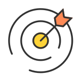

Custom messaging templates
Giving providers control and flexibility in patient communication
During the second half of my internship, I initiated this project to address a long-standing gap in Zocdoc’s provider-patient communication tools, a challenge the team has been struggling to solve for years.
I led the project end-to-end, from defining the scope and analyzing existing research to delivering a complete solution. I collaborated closely with our PM to define success metrics, participated in design critiques with the team, and ultimately presented the final solution to the Design and Research team, including the VP of Design.
REVIEWING THE DATA
Communication gaps are costing providers real appointments — and trust in Zocdoc.
20% of provider-initiated cancellations occur because providers can’t reach patients for key information
40% of appointments are missing insurance details
Yet, Zocdoc's "Request to call" feature, designed to help providers follow up with patients about missing information, is hardly used.
THE CHALLENGE
How might we give providers full visibility and control over patient communication, so they can trust Zocdoc’s tools again?
THE SOLUTION
A messaging system that puts providers in charge
Take control of every patient message — see every message, build and schedule targeted templates, and track all patient interactions in one unified timeline.
01 / HIGHLIGHT
Edit existing messages anytime, ready to use
Update Zocdoc's pre-written templates to set a new default, or customize the message for individual patients right before sending without changing your saved template.
02 / HIGHLIGHT
Build targeted templates  that send when you want
Target specific patient groups by visit reason, patient type, or location—then schedule messages to deliver before or after appointments, including post-visit follow-ups.
03 / HIGHLIGHT
Track all appointment activity per patient
See what's been sent, check scheduled messages, monitor patient responses, and edit or cancel upcoming sends, all from the appointment card.
THE OUTCOME
I delivered an MVP to a long-standing problem and fueled project momentum.
After presenting to the Design & Research team, the work was met with enthusiasm and sparked discussions around future implementation. If adopted, my work is projected to:
1.
Streamline appointment management
Improve patient responsiveness and decrease the 20% of cancellations that happen when providers can’t reach patients for essential information
2.
Improve insurance collection rates
Reduce the 40% of appointments missing insurance details by helping providers collect patient information earlier, minimizing day-of delays
3.
Increase provider confidence and adoption
Build trust in Zocdoc’s communication tools and encourage greater use of underutilized features like “Request to call” by giving providers more control over their messaging
That was the TL;DR. Here's how I approached it.
PROCESS OVERVIEW
Timeline
PROBLEM DISCOVERY
Drawing from 8 provider interviews and an audit of the current experience, I identified key pain points between the product today and provider needs.
01 / PAIN POINT
Rigid communication tools
Providers want to deliver personalized care, but Zocdoc’s templates force them into a one-size-fits-all approach.
(Collect intake) Templates can't be edited and providers are limited to appending a message
02 / PAIN POINT
Incomplete message history
Providers want message records to help patients and prevent confusion, but Zocdoc doesn’t show the full communication history.
(Appointment card) Information is buried within accordions, and only some appointment activity is displayed
03 / PAIN POINT
Limited message visibility
Providers often can’t see what patients receive: some messages are collapsed, and others are hidden but configurable.
(Request to call) Previewing the message content is easy to miss and requires an extra click
(Intake settings) Users can't see message content and have to trust that these reminders are delivered
Digging deeper, I uncovered a bigger problem: Zocdoc sends four additional messages that don’t appear anywhere in the interface, leaving providers completely unaware they exist.
UNDERSTANDING THE PRODUCT
Making sense of the hidden messaging system
After compiling message content from Miro boards and design files, I mapped each message type, 1. visible, 2. hidden but configurable, or 3. completely hidden, to reveal where providers lack visibility and control.
THE CORE PROBLEM
By dictating message content and timing, Zocdoc strips providers of transparency and control, making it difficult to communicate effectively with patients.
SETTING UP CONSTRAINTS
Two-way chat wasn’t an option.
Previous research showed providers worried about HIPAA liability and 24/7 availability expectations with open-ended messaging.
This shaped my approach: deliver flexibility and control within structured, one-directional templates.
The two-way messaging concept tested in 2024
HYPOTHESES
Translating insights into hypotheses
To define success and potential impact, I collaborated with a Product Manager to translate research insights into measurable hypotheses.
Defining what success looked like before diving into design
USER STORIES
Jobs to be done
I created user stories to guide my design decisions and ensure the solution addressed provider needs.
1.
As a provider, I want to schedule automated messages to patients so I can eliminate repetitive tasks
2.
As a provider, I want to schedule automated messages to patients so I can eliminate repetitive tasks
3.
As a provider, I want to track message history so I can support more effective patient care
01 / EXPLORATIONS
Transforming Intake settings into a centralized messaging hub
Most automated message content isn’t visible to providers today, and there’s no single place to review or manage all messages. I explored how these could be surfaced in one centralized space.
Early iterations: Adding to Communication preferences
In the beginning, I tried adding messages directly under the “Add custom messages” section of Communication preferences, but this approach quickly revealed its limits: it led to excessive scrolling, scattered hierarchy, and a structure that couldn’t scale to accommodate all message types.
Uses current architecture
Multiple "Add" buttons create clutter
Poor scalability as message types increase
Excessive scrolling required
Reduces vertical space by organizing into User-triggered and Automated
Still has multiple "Add" buttons
Hides some content behind tabs
Evolving into a scalable Messaging templates system
I expanded beyond Communication preferences, restructuring it into Messaging templates, which combines existing settings with newly surfaced messages. Using a nested navigation pattern, each message type now has its own dedicated page for viewing and editing.
02 / EXPLORATIONS
Surfacing appointment activity with “Activity log”
Currently, providers have no clear way to view appointment history or related patient-communications in one organized place. I wanted to make this information more accessible by consolidating it in a single, structured view.
Exploring familiar vs. structured layouts
I explored two directions: an accordion layout aligned with existing Appointment card patterns, and a chat-style interface. My mentor initially preferred the chat version for its conversational flow, but I raised that it could be confusing since these weren’t real conversations — just automated messages.
The chat view also introduced visual clutter with long, repetitive content, prompting me to question whether we needed to show the full message every time.
Refining into a clear, timeline-based view
Drawing from a timeline concept in previous vision work, I developed a version that presented appointment activity chronologically while keeping the interface clean.
I added sender icons and simplified hierarchy to improve scanability. The timeline only surfaced the most important information, with an option to view the full message when needed.
MOVING FORWARD
What are the next steps?
1.
Assess feasibility with cross-functional partners
Collaborate with engineering and product management to align on business goals and technical limitations, ensuring a clear path forward
2.
Gather provider feedback
Test whether the settings page clearly communicates how messages are sent and used, and identify opportunities to simplify template creation
3.
Explore future enhancements
Incorporate advanced logic into message templates and allow providers to send messages outside the scheduling flow
KEY TAKEAWAYS
Learnings
"If it ain't broke, don't fix it"
At first, I wanted to redesign everything, but digging deeper helped me understand why these decisions were made in the first place. Oftentimes, the best path forward is to build on top of an existing infrastructure, rather than tearing it down.
Ask questions, leverage your team
Reaching out to people who worked on earlier iterations (shout-out to Maggie) gave me the context I was missing, unblocked me countless times, and often helped me discover stronger ways to approach the problem.
You're the expert of your own work
This internship, in particular, taught me how to build confidence as a designer. After all, no one knows your projects better than you. You’ve put in the hours and done all the thinking — now it’s time to trust yourself and share your work with confidence.
Peri Shechtman
Lead Product Designer
Cynthia!!! It's been such a joy working with you this summer. You've brought a level of positivity, curiosity, and dedication that makes you stand out. You're Proactive & Attentive, Receptive to Feedback, highly Organized with strong Rationale, and a Collaborative, thoughtful partner in critiques. Your visual decks for the Hot Take and Intern Demos are so impressive."
It's been amazing to see your skills and confidence grow over the summer. You've made a real impact on the team and with me. I know you'll bring that same energy and thoughtfulness to whatever comes next.
Internship highlights
Thank you
Peri, Appointment Management Pod, Design Appointment team, Intern Committee, Design Department, Zinterns '25, & more